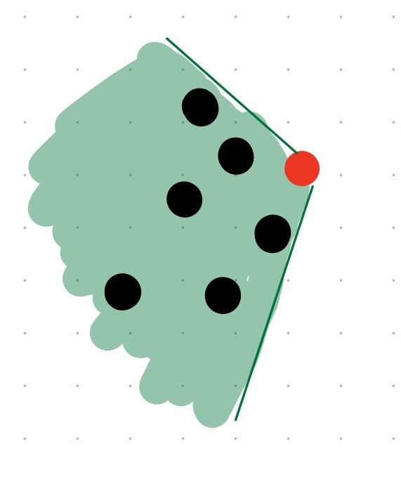

| Skill | Time | Activity | Materials | Formation |
|---|
Christian SW6 week: 1
| 1-Stride entry into deep water | 1min | talk about its use in lifesaving(actualy no but okay) | |  |
| 3-Legs-only surface support 45 sec | 45sec | hot potato -- once developed give them a weight(5#). Because why not | ball or 5# as needed |  |
| 4-Swim underwater 10 m to recover object | 4min | once developed increase the dive depth to deep end(progress on drop) | rings | |
| 5-Eggbeater kick on back 15 m | 7min | progress proper eggbeater(manipulation and drills as needed) | |  |
| 7-Breaststroke 50 m | 8min | ensure proper must sees+corrections(ref worksheet) increase distance and add drills | | |
| 8-Front crawl 100 m/Back crawl 100 m | 8min | ensure proper must sees+corrections(ref worksheet) increase distance and add drills | | |
| 12-Workout 300 m | 13min | talk about proper pacing and swiming etiquiite(ensure f and b must sees are met(ref worksheet))(front crawl back crawl or breaststroke) | | |
| 13-Water smart: swim with a buddy / wear a lifejacket / check the ice / swim to survive | 2min | incorperate into a skill(ie lifejackets in swim to survive) | as needed | |